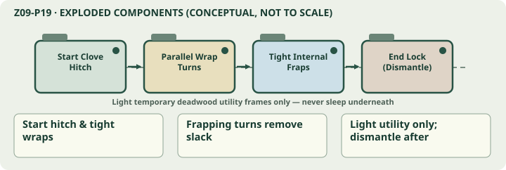

Z09-P19 · Tools and construction · Adapted historical material
Bind poles temporarily with square, diagonal and tripod lashings
Lash sound deadwood poles securely for light utility tripods, pot hangers or drying racks without nails or tree damage.
When it applies · Temporary low-impact utility camp frames made strictly from lawful downed deadwood; NOT rated overhead sleeping roofs.
Equipment · Utility lashing cordage and sound straight downed deadwood poles.

Actions
- Match the lashing to pole geometry: use square lashings for poles crossing tightly at right angles, diagonal lashings to pull springing crossed poles together and sheer/tripod lashings for light three-legged utility stands.[K09, K11, ED]
- Pull three neat parallel wrapping turns firmly around the poles and finish with two tight frapping turns cinched BETWEEN the poles to take out all slack before locking off with a clove hitch.[K09, ED]
- Dismantle temporary lashings cleanly and scatter deadwood upon leaving public lands; never nail or wire into living trees.[K11, E22]
Failure recognition · Skipping tight frapping turns between the poles, leaving a wobbly tripod that collapses when a water pot hangs from it.[K09, C15]
Verify · Confirm neat uncrossed wraps, tight frapping turns between poles and zero wobble under gentle test weight before hanging utility items.[K09, ED]
Stop or change course · Never sleep beneath lashed deadfall roofs or treat camp lashings as engineered overhead structures; keep hot boiling pots stable and clear of legs.[K09, C15, E13]
Evidence and editorial notes
- C15 · NPS · Wildland Fire Safety (current web edition)
- Section: Wildland Fire Safety > Campfires and Stoves · Conditions: Outdoor cooking with portable liquid or canister stoves
Support: Operate stoves on level cleared ground away from tents and dry fuels, cool completely before refueling, and move away from any spilled fuel before lighting.
Limitations: Fuel canisters behave differently in cold weather and high elevation; follow manufacturer limits. · Conflicting evidence: None; aligns with CPSC-C and USFS-FIRE.
Editorial note: Governs stove setup, refueling isolation, and spill failure recognition. · Specialist reviewer: Portable appliance safety and fire prevention
Primary source · checked 2026-11-24 - E13 · USDA Forest Service · Hazard Tree Safety (agency PDF)
- Section: What You Can Do to Reduce Risk · Conditions: Forest campsites and stops
Support: Look for dead trees and falling material. Stay away from hazardous trees and move away when winds make the site unsafe.
Limitations: Internal decay and root rot can cause live-looking trees to fail in saturated soils or high wind. · Conflicting evidence: Does not specify a universal exclusion radius; tree height and slope govern fall reach.
Editorial note: Prevents false precision on fall-zone distance while requiring overhead screening. · Specialist reviewer: Land management and arboriculture safety
Primary source · checked 2026-11-24 - E22 · NPS · Leave No Trace Seven Principles (current web edition)
- Section: Principle 2 > Travel and Camp on Durable Surfaces · Conditions: Campsite selection and shelter setup on public lands
Support: Pitch shelters on established pads, rock, gravel, dry grass, or snow rather than fragile meadows or saturated shorelines; do not alter terrain or cut live vegetation for shelter frames.
Limitations: Deadfall shelter construction is inappropriate in high-use or protected zones except genuine life-safety emergencies. · Conflicting evidence: Restricts destructive improvised shelter building during routine trips.
Editorial note: Separates lawful low-impact practice from emergency improvised cover. · Specialist reviewer: Land management and wilderness ethics
Primary source · checked 2026-11-24 - K09 · USDA Forest Service · Handtools for Trail Work (0523-2810-MTDC) (agency handbook)
- Section: Cordage, Anchors and Rigging Boundaries · Conditions: Non-life-safety camp lashing, tarps, haul lines and tie-downs
Support: Cordage strength drops significantly at knots, sharp bends, wet fibers, UV exposure and abrasion; inspect fibers before loading and never use unrated camp cord or improvised bindings for life-safety suspension or climbing.
Limitations: No universal breaking strength applies to natural plant fibers or weathered salvaged rope. · Conflicting evidence: Counters folklore claims equating improvised cordage to rated climbing rope.
Editorial note: Separates camp utility lashing/hauling from life-safety rigging. · Specialist reviewer: Rigging safety and materials mechanics
Primary source · checked 2026-11-24
Current assessment · W2C-E004 (2026-11-25) · Open: cited section not found in the source; escalated: Replacement support identified in FM 3-97.61 paras 4-1 to 4-3 (pages 4-1 to 4-3): sharp edges cut nylon rope under tension; leaving rope knotted or tightly stretched reduces strength and life over time; ultraviolet light deteriorates nylon; inspect before and after each use; select rope by task, type, diameter and tensile strength. Limits: No support found for the wet-fiber strength-loss part of K09. FM context is mountaineering rope, not camp cord. - K11 · NPS · Leave No Trace Seven Principles (current web edition)
- Section: Principle 2 and 5 > Low-Impact Construction and Material Use · Conditions: Temporary camp craft and emergency construction on public lands
Support: Avoid cutting live saplings, nailing into live trees or building permanent structures on public lands; dismantle temporary non-destructive lashings and leave natural features intact.
Limitations: Life-safety emergencies differ from routine camp practice but still require hazard-free builds. · Conflicting evidence: Restricts destructive bushcraft construction in routine recreation.
Editorial note: Distinguishes lawful low-impact knots/lashings from destructive camp building. · Specialist reviewer: Land management and wilderness ethics
Primary source · checked 2026-11-24
Source lineage · USFS low-impact craft and B012 shelter boundaries; new manuscript · Classification · Adapted historical material.